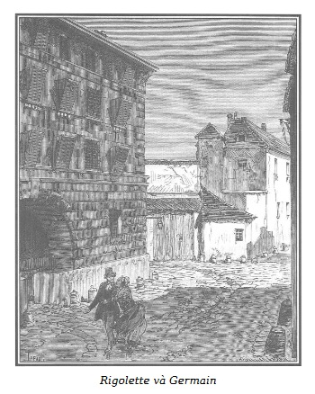

Germain nghĩ bụng không thể, không thể thế được, cái con người chỉ mới nghe hai từ thiện tâm và danh dự mà đã phấn khích lên như vậy, thì người đó không thể nào đã ăn trộm lại còn cố tình kể lại một cách khinh bạc trơ trẽn đến thế.
Chọc Tiết nói tiếp mà không chú ý đến sự sửng sốt của Germain:
– Cái gì đó làm tôi gắn bó với ngài Rodolphe như chó với chủ thì đó là chính vì ngài đã phục hồi nhân phẩm cho tôi. Trước khi gặp ngài, tôi chỉ cảm nhận mình một cách hời hợt, nhưng ngài ấy đã khuấy động sâu sắc tâm trí tôi, và thật là đến nơi đến chốn, tôi nói thật đấy. Xa ngài và xa nơi ngài ở, tôi cứ như cái xác không hồn. Xa ngài tôi mới nghĩ: ngài sống mới khác người làm sao! Ngài chung đụng với đủ loại người vô lại tầm cỡ như vậy (tôi biết khá nhiều về họ), khiến ngày nào cũng lâm nguy đến tính mạng không phải chỉ vài lần, và chính là trong một những hoàn cảnh như vậy mà tôi có thể dốc lòng bảo vệ ngài, nhờ cũng có đôi chút bản lĩnh hơn đời. Nhưng mặt khác, ngài đã bảo tôi: “Chú mày ạ, đâu cần thì phải đến để tỏ ra hữu ích.” Tôi thì lại muốn trả lời ngài: “Thưa ông Rodolphe, đối với tôi, thì ngoài ông ra tôi không phục vụ ai khác” nhưng tôi không dám nói. Người bảo tôi: “Thế thì, đi đi.” Tôi lên đường và đã cố hết sức mà đi. Nhưng, mẹ kiếp! Đến lúc lên tàu, rời xa nước Pháp, xa cách ngài Rodolphe cả một quãng biển rộng, chẳng hy vọng có ngày gặp lại thì, thật thế, tôi không còn bụng dạ nào nữa mà chịu nổi. Ngài đã nhắn với đại diện của mình là trao cho tôi một món tiền cực lớn khi tôi xuống tàu. Tôi tìm gặp người ấy, bảo: “Lúc này thì không thể được, tôi khoái đất liền hơn. Ông hãy đưa cho tôi ít tiền lộ phí để quay trở về Paris, tôi không thể không trở về được, mà chân tôi thì còn vững lắm. Ngài Rodolphe muốn nói gì, tùy ngài, ngài sẽ nổi giận, không muốn nhìn mặt tôi nữa, có thể thế đấy! Nhưng phần tôi, tôi lại sẽ thấy được gặp mặt ngài, tôi sẽ biết ngài ở đâu và nếu ngài vẫn cứ sống theo kiểu như xưa, thì sớm muộn tôi cũng đến kịp thời để lấy thân mình tôi che chắn lưỡi dao cho ngài. Vả lại, rốt cuộc thì tôi không thể xa rời ngài như thế này được! Tôi cảm thấy có cái ma lực kỳ quái gì nó thu hút tôi về phía ngài.” Cuối cùng thì người ta đưa tiền ăn cho tôi và tôi trở về Paris. Tôi không hề bận tâm điều gì khi đi đường, nhưng khi đã trở về thì nỗi e ngại xâm chiếm lấy tôi. Sẽ nói thế nào đây cho ổn để cáo lỗi với ngài Rodolphe, vì sao quay về mà không được phép của ngài? Úi chà, dù sao thì ngài cũng chẳng ăn thịt tôi! Thôi thì đến đâu thì đến vậy! Tôi bèn đi tìm người bạn thân của ngài, một vị thật “lớn con” và hói đầu, lại một người cực kỳ nữa đấy! Trời đất ơi, khi tôn ông Murph đi vào phòng, tôi mới tự nhủ thầm: “Số phận của mình đã được định đoạt rồi đây!” Tôi thấy nghẹn cả họng, tim đập như trống làng. Tôi đợi một trận lôi đình ra trò! Ôi, lầm to! Con người quý báu ấy tiếp tôi như vừa mới chưa gặp tôi từ tối hôm qua thôi. Ông bảo với tôi là ngài Rodolphe không những không giận tôi mà còn muốn gặp tôi ngay. Thật vậy, thế là ông đưa tôi vào gặp vị ân nhân của tôi. Trời đất ơi, khi tôi giáp mặt, ngài vốn là cao thủ và hảo tâm như thế, dữ như sư tử mà lại hiền hậu như trẻ con, ngài là ông hoàng mà lại mặc áo blouse như tôi để có dịp (xin ban phước lành cho dịp ấy) nện cho tôi một trận mưa đấm tóe khói ra. Này, cậu Germain ạ, khi nghĩ tới tất cả những tài nghệ ấy của ngài, tôi cảm thấy mình nhộn nhạo cả lên, tôi đã khóc như con nít. Vậy đấy, thay vì cười chuyện ấy, vì cậu hãy hình dung bộ mặt của tôi lúc khóc nhè như vậy, ngài Rodolphe lại nghiêm trang bảo tôi: “Đã về đấy à, cậu cả!” – “Dạ thưa vâng, thưa ông Rodolphe, xin ông thứ lỗi nếu tôi đã trót dại, nhưng quả thực là tôi đã không nín nhịn được. Cho tôi một góc trong sân nhà để tôi làm chỗ ở, nuôi tôi hay là để tôi tự kiếm nuôi thân, đó là tất cả những gì tôi xin ông và nhất là xin ông đừng để tâm ghét bỏ vì tôi đã quay trở về.” – “Ta càng ít giận anh hơn đấy, vì anh đã quay về đúng lúc để giúp ta.” – “Thế ạ, thưa ông Rodolphe. Lại có thể như thế chăng? Vậy thì, ông thấy không? Như đã có lần ông nói với tôi, phải có Trời chứ, nếu không thì làm sao mà tôi lại về đây đúng lúc ông cần đến tôi. Và, thưa với ông Rodolphe, vậy thì tôi có thể làm được việc gì giúp ông ạ? Nhảy từ tháp chuông nhà thờ Đức Bà xuống đất chăng?” – “Không cần đến thế đâu, chú mình ạ! Một chàng trai lương thiện và tốt nết mà tôi lưu tâm săn sóc như đối với một đứa trẻ đã bị cáo buộc oan về tội trộm cắp và bị tống giam ở nhà ngục La Force. Tên cậu ta là Germain, người hiền lành, yếu ớt. Cậu ta bị bọn vô lại nhốt cùng khá căm ghét, tính mạng có thể bị đe dọa. Anh vốn không may mà đã quen với đời sống ngục tù, đi lại với một số lớn tội phạm, liệu anh có thể trong trường hợp có vài người bạn cũ nào đấy, hiện cũng đang ngồi tù ở nhà ngục La Force (có cách để biết được đấy), mà tìm phương tiện liên hệ với họ, hứa hẹn tiền bạc với họ như đinh đóng cột để gửi gắm cậu thanh niên tội nghiệp nọ, để họ che chở cho, được không?”
– Vậy con người hào hiệp và vô danh đã hết sức quan tâm đến số phận của tôi như vậy là ai kia? – Germain mỗi lúc một thêm ngạc nhiên.
– Sẽ có lúc cậu có thể được biết! Còn về phần tôi, thì tôi cũng chẳng hay! Lại nói về câu chuyện giữa tôi và ngài Rodolphe. Trong khi ông nói thì trong đầu tôi nảy ra một mẹo rất buồn cười, rất quấy đến nỗi tôi không thể nhịn cười được trước mặt ngài. “Có chuyện gì thế hở chú mình?” – “Chao ôi! Thưa ông Rodolphe, tôi cười vì tôi hài lòng, vì tôi đã tìm được cách che chở cho anh chàng Germain khỏi những thủ đoạn xấu của bọn phạm nhân kia, tìm được cho cậu ta một người bảo vệ oai hùng, vì một khi có người anh em như thế che chở, thì sẽ chẳng có kẻ nào dám đụng đến lông chân cậu ta.” – “Tuyệt đấy, chú mình ạ! Hẳn là một trong những người bạn tù cũ của chú mình chứ gì?” – “Thưa đúng ạ, anh ta vừa bị tống vào ngục La Force cách đây vài ngày, tôi được tin ấy khi vừa về đến đây, nhưng cần phải có tiền.” – “Hết bao nhiêu?” – “Một tờ một nghìn franc.” – “Đây này!” – “Xin cảm ơn, thưa ông Rodolphe, sau hai ngày nữa ông sẽ được tin của tôi. Kẻ tôi tớ này xin kính chào.” Trời đất ơi, chẳng có ai cai quản tôi, tôi có thể giúp ông Rodolphe qua cậu, thế mới tuyệt chứ!
– Tôi bắt đầu hiểu, hay đúng hơn, lạy Chúa, hiểu nên bàng hoàng quá! – Germain suýt la lên. – Có thể tận tâm như thế ư? Để đến đây bảo vệ, che chở cho cháu trong cái nhà ngục này, bác đã có thể phải phạm tội.
– Khoan! Ngài Rodolphe đã nói với tôi là tôi có thiện tâm và danh dự, những từ ấy là pháp lệnh đối với tôi, vì nếu tôi không tốt hơn xưa thì chí ít cũng không xấu xa hơn xưa.
– Nhưng vụ trộm ấy… Nếu bác không nhúng tay vào thì tại sao bác lại vào đây cơ chứ?
– Từ từ đã nào! Trò đùa ấy như thế này này: Với số tiền một nghìn franc, tôi mới đi mua một mớ tóc giả màu đen, cạo phăng bộ râu má đi, đeo cặp kính râm xanh lên mắt, chèn một cái gối vào lưng, thế là thành một anh gù thực sự. Tôi lập tức thuê ngay một cái phòng ở dưới tầng trệt, trong một phường đông đúc, tìm được phố Provence thích hợp, ứng ngay tiền dưới cái tên ông Grégoire. Hôm sau, tôi đến chợ Temple mua đồ dùng sinh hoạt cho cả hai buồng, vẫn cải trang với bộ tóc giả đen, kính râm xanh, cái lưng gù gù để ai cũng để ý. Tôi cho xe đồ về phố Provence, thêm vào đó bộ đồ ăn bằng bạc mua ở Đại lộ Saint-Denis, với bề ngoài của một người gù. Tôi trở về thu dọn gọn ghẽ nơi ở mới. Tôi bảo với người gác cổng là qua ngày hôm sau nữa tôi mới về nhà ngủ và tôi đem chìa khóa đi. Cửa sổ của hai phòng dày dặn, chắc chắn. Trước khi đi tôi cố ý để một cái cửa đóng mà không cài then bên trong. Đêm đến, tôi bỏ bộ tóc giả, cặp kính râm, cái đệm gù cùng bộ quần áo mặc khi đi mua bán và thuê nhà. Tất cả những thứ đó tôi bỏ trong một cái rương và gửi về địa chỉ ông Murph, người bạn của ngài Rodolphe, yêu cầu ông này bảo quản giúp. Tôi lại cũng mua cái áo blouse, cái mũ trùm xanh này đây, một thanh sắt dài hai pied và vào lúc một giờ sáng, tôi đến rình phục ở phố Provence, trước ngôi nhà của tôi, chờ đúng lúc có đội tuần canh đi qua để mau chóng tự mình ăn trộm của mình, trèo tường, cậy cửa nhà mình, để người ta tóm lấy cổ mình.
Nói đến đây, Chọc Tiết phá lên cười ha hả.
– Chà, giờ thì cháu hiểu rồi.
– Nhưng rồi cậu sẽ thấy tôi thật là đen đủi, chẳng thấy đám tuần canh nào đi qua cả. Tôi có thể cuỗm sạch của cải của mình một cách thoải mái. Cuối cùng, mãi đến lúc hai giờ sáng, tôi mới nghe thấy tiếng giày lính nện ở đầu phố. Tôi bèn nạy ô cửa, đập vỡ một vài ô kính rầm rầm, đẩy cửa sổ, nhảy vào nhà, cắp lấy hộp đựng bộ dĩa dao ăn bằng bạc, vài bộ quần áo. May thế, đội tuần tra nghe tiếng kính bị đập vỡ, ba chân bốn cẳng ập đến, tóm ngay được tôi vừa vượt cửa sổ nhảy ra. Họ gọi cửa, người gác cổng mở cửa lớn. Họ đi tìm ông cẩm đến. Người gác cổng khai là vừa mới ngày hôm qua, hai cái buồng bị trộm cậy cửa vào khoang đồ đã có một ông người gù gù, tóc đen, đeo kính râm xanh thuê. Tên ông ta là Grégoire. Tôi vốn có bộ tóc bờm hoe nhạt như cậu thấy đấy, tôi mở tròn mắt như thỏ trong hang và đứng thẳng đuỗn như một anh lính Nga bồng súng, còn ai nhận ra được ông gù đeo kính râm xanh tóc mun được nữa. Tôi nhận hết, người ta bắt giải tôi về trại giam, đúng trại giam này và tôi đã đến thật kịp thời để giằng cậu trai trẻ khỏi nanh vuốt của tên Bộ Xương mà ngài Rodolphe đã dặn tôi là săn sóc cậu ta như con đẻ.
– Ôi, cháu chịu ơn bác biết mấy. Về sự tận tâm của bác đối với cháu.
– Không cần phải ơn tôi. Cậu cần biết ơn ngài Rodolphe mới đúng.
– Nhưng do nguyên nhân nào mà ngài lại quan tâm đến cháu như thế?
– Người sẽ nói cho cậu biết sau, trừ phi Người không thích nói ra mà thôi! Vì Người chỉ muốn làm điều hay cho kẻ khác và nếu ai đó đánh bạo mà hỏi tại sao, thì Người chẳng ngần ngại gì mà không trả lời: “Can hệ gì đến anh mà anh xen vào nhỉ?”
– Thế ngài Rodolphe có biết là bác ở đây không?
– Có ngu mới để ngài biết ý đồ của mình! Đời nào ngài lại để cho tôi làm thế, làm cái trò ấy. Và này, không phải tự khoe đâu đấy nhé, cậu xem có tuyệt không?
– Nhưng như thế thì liều lĩnh, mạo hiểm quá, lúc này bác vẫn đang còn lâm nguy đấy!
– Liều gì mà liều, hiểm gì mà hiểm? Có chăng chỉ là không bị giam ở đây, nơi cậu đang bị giữ, thế thôi! Nhưng tôi cũng vẫn trông cậy vào sự can thiệp của ngài Rodolphe để chuyển trại giam mà gặp được cậu. Một lãnh chúa như ngài thì làm được tất. Một khi mà tôi đã bị giam giữ thì hẳn ngài cũng hài lòng thôi, vì dù sao cũng giúp được cậu ít nhiều.
– Nhưng đến ngày bác phải ra tòa để xét xử thì…
– Vậy thì lúc đó tôi sẽ yêu cầu ông Murph gửi cho tôi cái rương. Trước quan tòa tôi sẽ đeo lại mớ tóc giả, cặp kính râm xanh, cái bướu gù và trở lại thành ông Grégoire trước ông gác cổng đã cho tôi thuê phòng, trước những chủ hiệu đã bán hàng cho tôi, đối với người bị mất trộm là như thế. Nếu họ lại muốn thấy thằng ăn trộm thì tôi lại cởi bỏ lốt ngoài cải trang như ban ngày, cả người bị mất trộm và tên ăn trộm cũng chỉ là một anh Chọc Tiết mà thôi! Không hơn, không kém! Vậy thì họ làm quái gì được tôi, khi đã rõ mười mươi là tôi đã tự ăn trộm của tôi!
– Thật thế nhỉ! – Germain mỗi lúc một thêm vững dạ. – Nhưng vì rằng bác quan tâm lo lắng đối với cháu như thế, thế thì tại sao bác đã chẳng nói gì với cháu ngay?
– Tôi đã biết ngay lập tức âm mưu sát hại cậu, lẽ ra tôi có thể tố cáo việc đó trước khi bác Hề Giấm bắt đầu hoặc kể xong câu chuyện. Nhưng dù tố cáo ngay cả những tên gian manh như vậy thì đối với tôi cũng không ổn. Tôi thích trông cậy vào bản lĩnh của mình hơn, để giằng cậu ra khỏi nanh vuốt của tên Bộ Xương. Vả lại, khi thấy mặt hắn, thấy cái thằng kẻ cướp ấy, tôi bèn tự bảo: “Đây là dịp may tuyệt vời để nhớ lại trận mưa đấm của ngài Rodolphe, nhờ vậy mình mới có được vinh dự đi lại với ngài ấy.”
– Nhưng nếu tất cả phạm nhân đều chống lại bác, thì bác làm gì được?
– Thì tôi sẽ la làng to như bò rống để kêu cứu. Nhưng tự mình thu xếp công việc thì vẫn tốt hơn, để có thể thưa lại với ngài Rodolphe là: “Chỉ có mình tôi nhúng tay vào công việc này. Tôi đã bênh vực và sẽ bảo vệ chàng trai của ông, ông cứ yên tâm.”
Vừa lúc đó, người gác cổng bước vào.
– Cậu Germain, đến mau, đến mau! Lên chỗ ông Giám đốc. Ông muốn hỏi chuyện cậu ngay lúc này. Còn anh, anh Chọc Tiết, hãy đi xuống Hố Sư Tử. Chú mày sẽ là trưởng nhà ở đó, nếu thấy hợp, vì chú mày đủ “thó” để giữ chức trách ấy. Và cánh tội phạm đừng có mà đùa với cỡ chú mày.
– Cũng được thôi! Đã ở đây thì làm quan hay làm lính cũng thế!
– Thế bây giờ bác còn ngại chìa tay cho tôi nữa không? – Germain thân mật hỏi.
– Thực lòng thì không, cậu Germain ạ! Thực lòng thì không! Lúc này, tôi tin chắc tôi có thể cho phép mình hưởng niềm vui đó và tôi rất vui lòng nắm tay cậu.
– Chúng ta sẽ gặp lại nhau, vì lúc này cháu đã ở trong vòng che chở của bác. Cháu chẳng còn gì phải sợ và từ phòng giam của cháu, ngày nào cháu cũng xuống sân chơi.
– Cứ yên trí, nếu tôi muốn, người ta sẽ còn phải khúm núm trước cậu nữa kia. Nhưng có một điều tôi mới nghĩ ra, cậu viết thạo mà. Cậu hãy ghi trên giấy những gì tôi đã kể cho cậu nghe và gửi đi cho ngài Rodolphe, Người sẽ không còn phải lo ngại gì cho cậu nữa và biết rằng tôi ở đây là do có ý đồ tốt, vì nếu mà Người lại hiểu khác đi, là thằng Chọc Tiết này đã trộm cắp, mà không rõ đằng sau câu chuyện thế nào thì… mẹ kiếp, với tôi, thế là hỏng!
– Bác cứ yên tâm, ngay tối nay thôi, cháu sẽ viết thư cho vị ân nhân xa lạ ấy. Sáng mai, bác sẽ cho địa chỉ và thư sẽ được gửi đi. Thôi, tạm biệt nhé, và cảm ơn bác nhé, bác trung hậu của cháu.
– Tạm biệt cậu Germain nhé! Tôi sẽ quay về với cái lũ khốn kiếp ấy đây, tôi là trưởng nhà của họ, họ nhất thiết phải giữ đúng mực, bằng không, thì cứ liệu!
– Đúng là chỉ vì cháu mà bác còn phải sống chung với những kẻ khốn kiếp ấy trong một thời gian nữa!
– Như thế thì đối với tôi cũng chẳng sao! Lúc này thì chẳng sợ “gần mực thì đen” nữa. Ngài Rodolphe đã tẩy trắng cho tôi kĩ rồi. Tôi đã được bảo hiểm tai nạn hỏa hoạn!
Thế là Chọc Tiết đi theo ông gác.
Germain đi vào văn phòng Giám đốc. Cậu ta vô cùng sửng sốt! Rigolette đã ở đấy.
Rigolette tái mặt, xúc động, nước mắt chứa chan. Tuy nhiên, miệng lại mỉm cười. Nét mặt bộc lộ nỗi vui mừng, niềm hạnh phúc khôn tả.
– Tôi có một tin mừng báo cho cậu, cậu Germain ạ! – Ông Giám đốc nói. – Tòa án vừa tuyên bố miễn tố cho cậu. Do bên nguyên đơn rút đơn và nhất là do những lời biện minh của họ. Tôi đã nhận được lệnh lập tức phải trả tự do cho cậu.
– Thưa ngài, ngài nói sao ạ? Có thể thế chăng?
Rigolette muốn nói nhưng vì quá xúc động nên đành chỉ nhìn Germain mà gật đầu và chắp hai bàn tay như cầu nguyện.
– Vừa nhận được lệnh tha cậu thì cô ấy đã đến ngay sau đó. – Ông giám đốc nói tiếp. – Một lá thư gửi gắm, có thế lực cực kỳ, do cô ấy đưa đến cho tôi thấy là cô ấy đã tận tâm săn sóc cậu thế nào trong suốt thời gian cậu bị giam ở đây. Tôi rất vui lòng cho người gọi cậu lên, chắc chắn rằng cậu sẽ rất sung sướng được khoác tay cô ấy cùng ra khỏi nơi này.
– Một giấc mơ! Không, đúng là một giấc mơ! – Germain nói. – Chao ôi! Thưa ngài, ngài tốt quá! Ngài tha lỗi cho nếu mà nỗi ngạc nhiên, vui mừng của tôi đã không cho tôi được cảm tạ ngài đúng lễ.
– Còn em thì, anh Germain ạ, em không còn biết nói gì lúc này, em sung sướng biết bao. Lúc em rời anh ra về, em thấy người bạn của ông Rodolphe đang chờ em. – Rigolette nói.
– Lại cũng là ngài Rodolphe! – Germain ngạc nhiên.
– Đúng thế! Bây giờ thì em có thể nói hết cho anh hay, anh sẽ biết rõ về những việc ấy. Ông Murph đã bảo em: “Germain được trả tự do, đây là một bức thư gửi cho ông giám đốc nhà lao. Khi cô đến đấy thì chắc ông ta đã nhận được lệnh thả cậu Germain rồi, cô có thể dẫn cậu ấy về nhà.” Em không tin ở tai mình nữa, vậy mà thực là như thế đấy! Em hộc tốc gọi một cái xe ngựa, em đến đây. Và cái xe còn đang đợi chúng ta ở dưới kia!

.Chúng tôi đành chịu không tả được nỗi vui sướng của cặp uyên ương ấy khi ra khỏi nhà lao La Force. Buổi tối, họ ở bên nhau trong gian buồng nhỏ của Rigolette mà Germain rời khỏi lúc mười một giờ để đến một phòng cho thuê bình dân có sẵn đồ đạc.
Giờ đây, xin tóm tắt lại những suy nghĩ hoặc lý thuyết mà chúng tôi đã cố gắng nhấn mạnh trong những chương hồi về đời sống nhà ngục.
Chúng tôi tự cho là đã may mắn chứng tỏ được:
Nhược điểm, sự bất lực và nguy cơ của chế độ giam giữ tội đồ tập trung lẫn lộn;
Những sự mất cân đối quá đáng giữa cách đánh giá, luận tội và trừng phạt một số tội phạm (trộm vặt trong nhà, trèo tường khoét vách) và một số tội phạm nào đó (bội tín)…
Và cuối cùng sự thiếu khả năng về phương tiện vật chất của các giai cấp nghèo khổ để mà hưởng quyền được xét xử theo luật hộ.